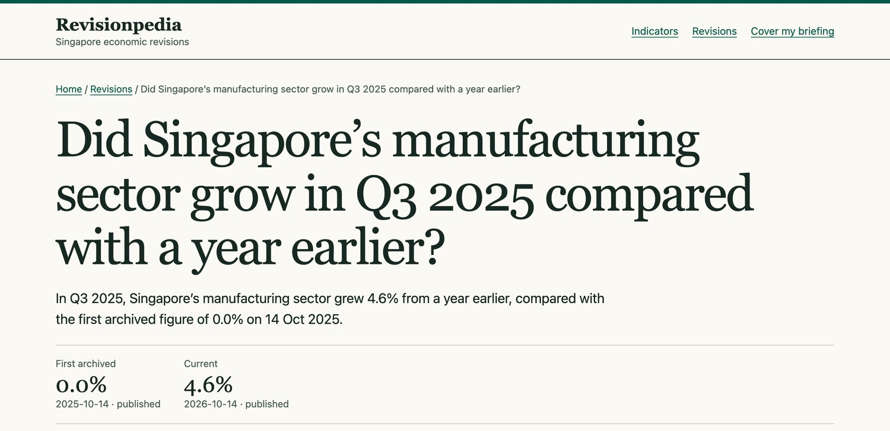

<!-- 5 · Proof and reach. Left: 57 / 60 counts up over a board of 60 small flaps, one per series and quarter in the
     archive (drawn from data/series via tools/grid.py → lib/20-grid.json); the 57 that changed after first release
     flip and land peach, the 3 that never changed stay dark. Right: the real Revisionpedia record page rises in a
     browser frame. -->
<section class="slide" id="s5">
  <h2 data-enter>57 of 60 tracked figures changed after their first reading.</h2>
  <div class="left">
    <p class="big"><span class="count" data-to="57" data-from="0" data-d="1100">57</span><span class="of"> / 60</span></p>
    <div class="rp-housing grid"></div>
  </div>
  <div class="browser rise rp" style="--t:.2"></div>
  <aside class="notes"><b>Say</b>This is not rare. Of 60 series and quarters in our archive with more than one reading, 57 changed after first release. Revisionpedia, our public directory on Hashmeta, gives every figure and quarter its own page with its release history and official sources. It explains why one quarter is quoted three ways, and it is where an editor can ask us to cover their briefing.<b>Do</b>If asked: 21 crossed zero or an illustrative cutoff at some point; whether a slide needs fixing depends on its wording.</aside>
</section>

<style>
#s5{--field:var(--f5)}
#s5 .left{position:absolute;left:var(--pad-x);top:350px;width:620px}
#s5 .big{font:800 210px/.9 var(--serif);letter-spacing:-.04em;color:var(--ink-auto);font-variant-numeric:tabular-nums lining-nums}
#s5 .big .of{font-size:100px;letter-spacing:-.02em;opacity:.8}
#s5 .grid{margin-top:34px;display:grid;grid-template-columns:repeat(10,auto);gap:7px;padding:16px 18px 18px;--cw:46px;--ch:44px;--fl-ink:var(--accent)}
#s5 .grid .rp-fl>b>s{font-size:30px}
#s5 .rp{position:absolute;left:800px;top:350px;width:1020px;border-radius:18px}
#s5 .rp img{display:block;width:100%}
</style>

<script>
const el = document.getElementById('s5'), host = el.querySelector('.grid')
// columns = series (10), rows = quarters (6): a cell lands on a peach dot if that series-quarter ever changed
const G = window.DATA['20-grid'], cells = []
for (let q = 0; q < 6; q++) for (let s = 0; s < G.rows.length; s++) {
  const wrap = document.createElement('span'); wrap.style.display = 'contents'; host.appendChild(wrap)
  cells.push({ f: RP.flaps(wrap, 1, { text: G.rows[s].cells[q] ? '●' : ' ' }), on: !!G.rows[s].cells[q], i: q * 10 + s })
}
const finalAll = () => cells.forEach(c => c.f.set(c.on ? '●' : ' '))
Deck.on('s5', {
  enter: (_, ctx) => {
    if (!ctx.play) return finalAll()
    // flips sweep across the board in about a second, in step with the count
    cells.forEach(c => c.on ? c.f.play(' ', '●', { delay: .1 + (c.i % 10) * .06 + Math.floor(c.i / 10) * .045, dt: .045, maxFlips: 5 }) : c.f.set(' '))
  },
  rest: finalAll, final: finalAll,
})
</script>
